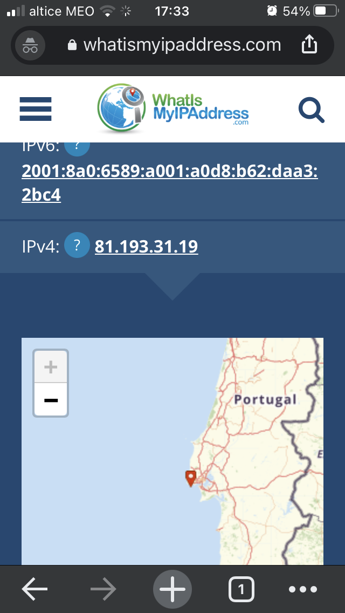

Obter a informação sobre o IP do PC e do telemóvel
Ir ao Google e escrever "what is my ip" e irá obter o IP associado. Anote onde está localizado, usando por exemplo a ferramenta whatismyipaddress.
Imagem obtida sobre o IP do Computador

Imagem obtida sobre o IP do telemóvel
Esta pagina reporta o rastreiamento de pacotes IP, desde um computador até um endereço IP destino/ou URL que especificamos. Este identifica os routers pelos quais os pacotes passam até o seu destino, indicando o tempo que demoram por "salto" entre router. No caso realizamos este rastreio com a app criada anteriormente no Laboratorio 1 no servidor Heroku.
Foi utilizada a ferramenta, GeoTraceroute:
Após a utlização da ferramenta anteriormente identifcada obtemos a imagem e os seguintes dados:

Foi utilizado o browser Chrome com a ferramenta (developer tool) que permite inspeccionar ficheiros descarregados, permitindo analisar uma grande variedade de informação. Abriu-se a página, clicando no botão direito do rato e selecionando a opção Inspect, tambem é possivel a partir da seguinte sequencia de teclas, Ctrl+Shift+i.Selecione a barra network. Clique na janela do seu browser onde está o URL do seu site e faça novamente Enter: